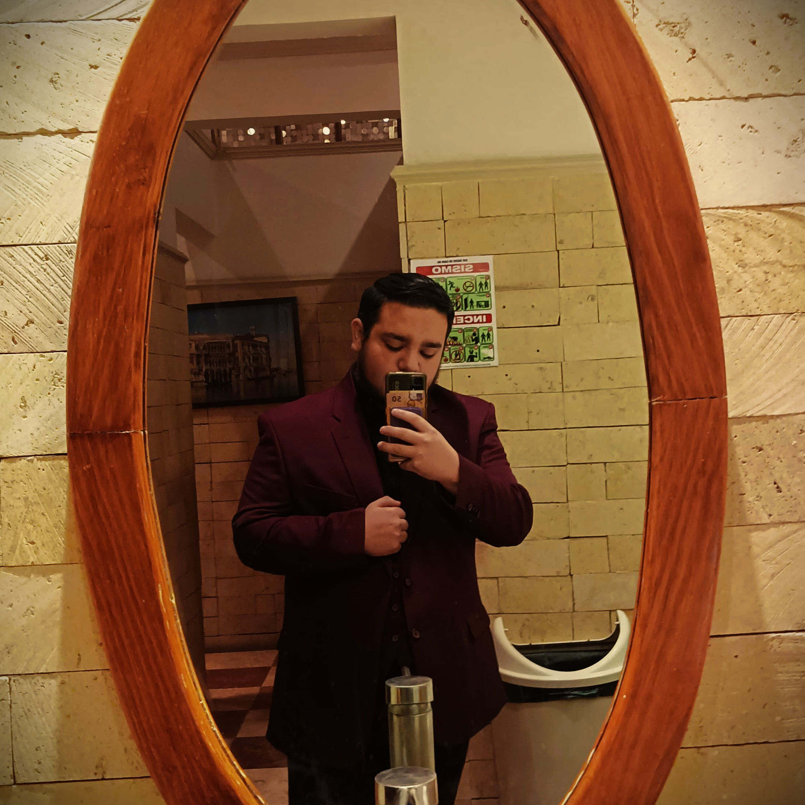

Me apasiona un poco el desarrollo web y la programación. Tengo experiencia en HTML, C++, Java y Python.

Bienvenido a mi sitio web.
Soy estudiante de la Ingeniería "Tecnologías de la Información y las Comunicaciones" en el "Instituto Tecnológico de Puebla".
En mi tiempo libre, me gusta jugar videojuegos, ver peliculas y series, y principalmente escuchar música me encanta mucho.